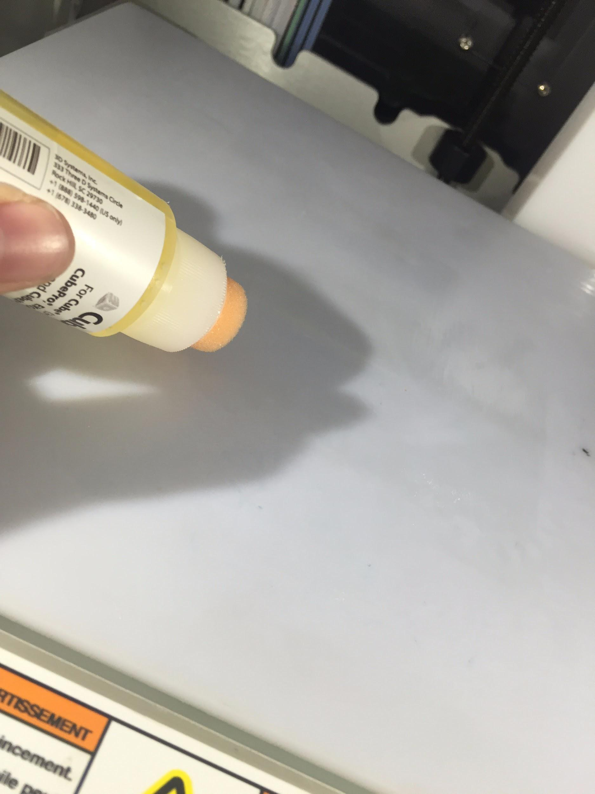
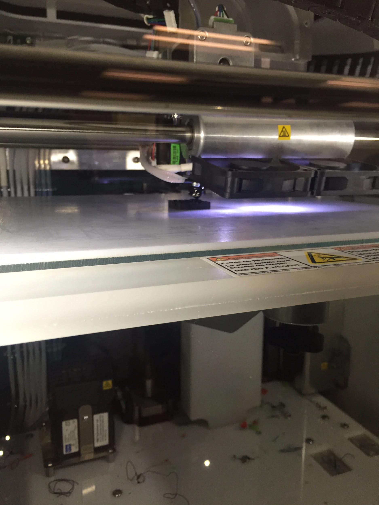
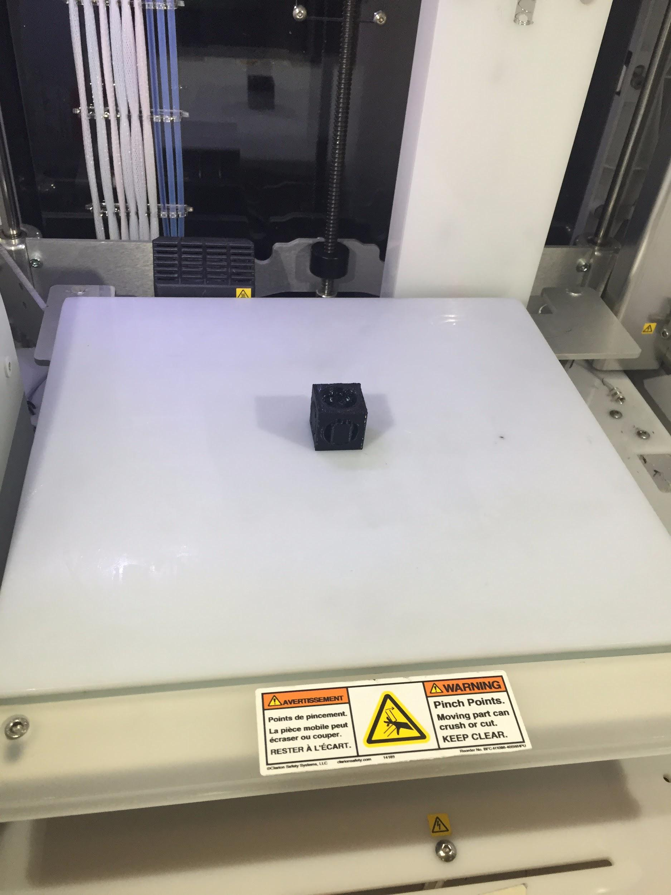
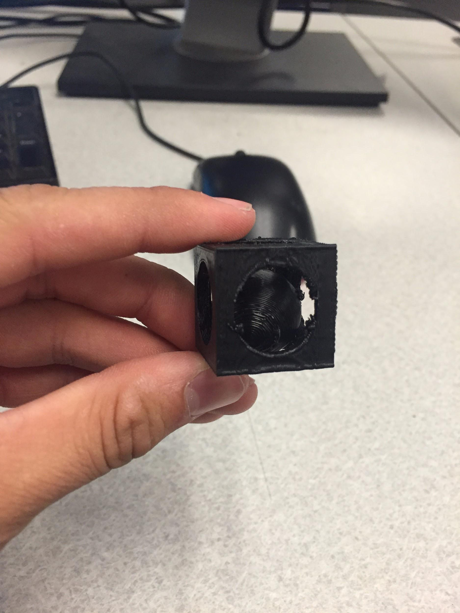

Printing the 3D Object
Now that the setup is complete the print option can be selected.

Select the part you created and touch print.

The cubepro will then notify you to apply glue to the plate.

Apply glue to the build plate over the area that we will be printing onto. Try to create as consistent of a layer of glue as possible.
Once started the 3D printer will layer material onto itself to create the geometry inputted through the file.
Once the printing process is complete you will be left with your almost finished object sitting on your build plate. Carefully remove the object from the printer and break off the internal supports created in the printing process and you will be left with your finished product.
Congratulations! You have printed your first object with 3D printing. The methods discussed in this tutorial can be used to print a range of objects with a variety of uses.
Click here to go back to the beginning.